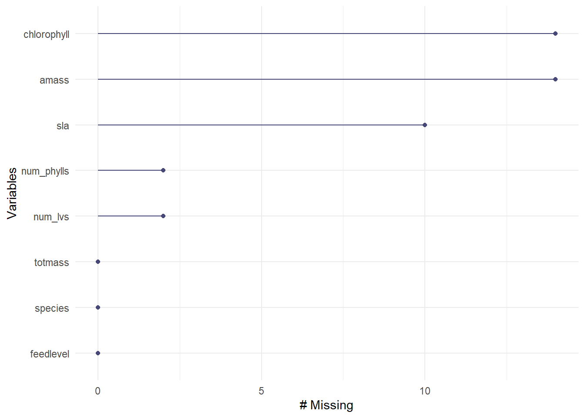

Sarrecenia, commonly known as the pitcher plant, is a carnivorous plant typical of well-lit and nutrient poor ecosystems (Ellison and Gotelli, 2002).The plant is reliant on prey in order to receive their essential nutrients of Nitrogen and Phosphorous, while still photosynthesizing to harness energy (Wakefield et. al., 2005). For these reasons, Sarrencia are equipped with both pitchers, leaves specialized for capturing anthropods and digestion, and phyllodes, leaves specialized in photosynthesis (Ellison and Gotelli, 2002). These plants are important model systems for a variety of reasons. Firstly, they are perennial plants and can live for decades, allowing ecologists to understand how past environmental conditions affect present populations (Ellison and Gotelli, 2002). Secondly, pitcher plants are predominantly located in nutrient deficient areas, therefore addition of nutrients such as nitrogen can have an effect on their physiology and possibly be used an an indicator for nitrogen levels (Ellison and Gotelli, 2002). Finally, Sarrencia live in bogs, which are ecosystems with high biodiversity, making the plant an integral part of the health of this ecosystem. In this analysis we will be addressing the question of what Sarrencia characteristics best predict total biomass. By understanding the specific morphological, physiological, and taxonomic characteristics that promote pitcher plant biomass, we can understand how to better manage and conserve this species, whether pitcher plants can be nutrient indicators, and what past environmental conditions may have been like for a specific pitcher plant population. We will be testing the null hypothesis that physiological characteristics do not affect pitcher plant biomass, with the alternative hypothesis that at least one physiological characteristic predicts pitcher plant biomass.
Methods
To conduct this study,ten different species of pitcher plants were used. Two plants of each species, twenty plants in total, were subjected to six different levels of feeding, for a total sample size of 120 plants. All plants were fed their appropriate amount once per week for a total of seven weeks. A total of 32 measurements of physiological characteristics were taken for each plant and included in a data set that will be analyzed in this report (Ellison and Fransworth, 2021). Next, the data set was imported and cleaned up, by renaming columns with easy to read labels and only keeping the morphological characteristics/columns we are interested in. The columns that were selected were total biomass, species, feed level, specific leaf area, chlorophyll, mass based light saturated photosynthetic rate of the youngest leaf, as well as the number of phyllodes and total number of pitchers and phyllodes of each plant.
Code
library(tidyverse)library(here)library(janitor)library(ggeffects)library(performance)library(naniar) # or equivalentlibrary(flextable) # or equivalentlibrary(car)library(broom)# would be nice to havelibrary(corrplot)library(AICcmodavg)library(GGally)library(MuMIn)
Code
plant <-read_csv(here("data", "knb-lter-hfr.109.18", "hf109-01-sarracenia.csv")) %>%#to make colunm names cleanerclean_names() %>%#selecting the list of columns to use/keepselect(totmass, species, feedlevel, sla, chlorophyll, amass, num_lvs, num_phylls)
Based on this new data set, we created a visualization of all missing observations.
Code
gg_miss_var(plant)

Figure 1: Data Visualization Each column is displayed on the y-axis with the number of missing variables on the x-axis.
The visualization indicated that missing data was present in the chlorophyll, mass based light saturated photosynthetic rate of the youngest leaf (amass), specific leaf area (sla), number of phyllodes (num_phylls), and the total number of phyllodes and pitchers (num_lvs). As these missing observations could interfere with our analysis, we removed them from the data set by subsetting the original data set.
Ellison, Aaron M., and Nicholas J. Gotelli. “Nitrogen Availability Alters the Expression of Carnivory in the Northern Pitcher Plant, Sarracenia Purpurea Purpurea.” Proceedings of the National Academy of Sciences, vol. 99, no. 7, 19 Mar. 2002, pp. 4409–4412, https://doi.org/10.1073/pnas.022057199.
Gotelli, Nicholas J., and Aaron M. Ellison. “Nitrogen Deposition and Extinction Risk in the Northern Pitcher Plant, Sarracenia Purpurea.” Ecology, vol. 83, no. 10, 1 Oct. 2002, pp. 2758–2765, https://doi.org/10.1890/0012-9658(2002)083[2758:ndaeri]2.0.co;2.
Wakefield, Amy E., et al. “Prey Addition Alters Nutrient Stoichiometry of the Carnivorous Plant Sarracenia Purpurea.” Ecology, vol. 86, no. 7, 1 July 2005, pp. 1737–1743, https://doi.org/10.1890/04-1673.